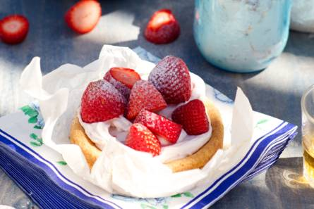

Aardbeientaartjes met mascarpone
Dit aardbeientaartje met mascarpone is een heerlijk nagerecht en ook nog eens makkelijk te maken.
- 3 middelgrote eieren
- 125 Gram ongezouten roomboter (zacht)
- 125 Gram fijne kristalsuiker
- 1 citroen (schoongeboend)
- 150 Gram tarwebloem
- 3 tl bakpoeder
- 250 Gram mascarpone (zachte roomkaas)
- 3 el aardbeien-rabarberjam
- 400 Gram verse aardbeien
- 1 el poedersuiker
-
Verwarm de oven voor op 180 °C. Splits de eieren. De eiwitten worden niet gebruikt. Doe de boter en kristalsuiker in een kom en klop in 5 min. met een mixer tot een luchtig mengsel. Voeg daarna al kloppend 1 voor 1 de eidooiers toe. Voeg pas een volgende eidooier toe als de vorige helemaal is opgenomen.
-
Rasp de gele schil van de citroen en pers de vrucht uit. Houd het sap apart. Voeg het citroenrasp toe aan het botermengsel en zeef de bloem en het bakpoeder erboven. Meng met een spatel voorzichtig door elkaar. Vet de springvormpjes in. Verdeel het beslag over de springvormpjes en strijk de bovenkant glad. Bak de bodems in ca. 12 min. in het midden van de oven goudbruin en gaar. Neem uit de oven en laat in 1 uur helemaal afkoelen.
-
Doe de mascarpone in een kom en meng de jam en 3 el citroensap erdoor. Verdeel de mascarpone over de taartjes. Gebruik daar eventueel een spuitzak voor. Verwijder de kroontjes van de aardbeien, snijd in stukjes en zet de aardbeien met de punten naar boven op de taartjes. Bestrooi met de poedersuiker en serveer direct.

Bewaartip:Je kunt de taartjes maximaal 1 dag van tevoren bereiden. Bewaar de mascarponevulling en aardbeien afgedekt in de koelkast. De taartbodems bewaar je het best buiten de koelkast in een afsluitbare doos of trommel.